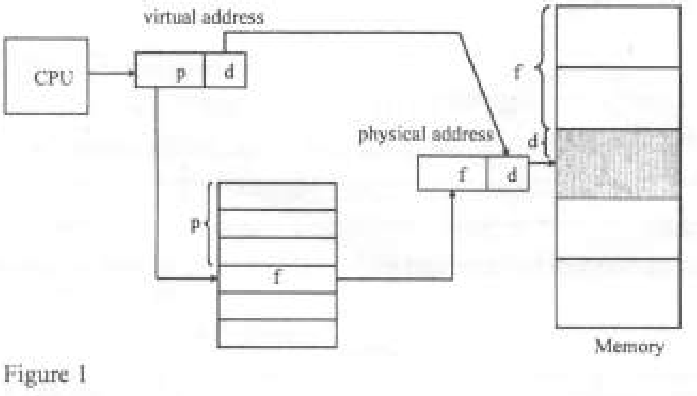
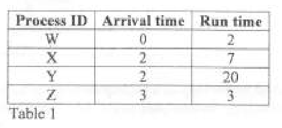

OPERATING SYSTEMS
Exam Code: 2920/105
Duration: 3 hours
Period: July 2012
1. (a) (i) State four objectives of operating systems. Resource Management: To manage and allocate computer resources (CPU, memory, I/O devices) efficiently and effectively. User Convenience: To provide a user-friendly and convenient interface for users to interact with the computer system. System Efficiency: To maximize system throughput and minimize response time, ensuring optimal performance. Data Security and Protection: To protect user data and system resources from unauthorized access and ensure data integrity. (ii) Explain the meaning of each of the following terms as used in operating systems: I. kernel; II. shell; III. process. I. Kernel: The kernel is the core component of an operating system. It is the lowest level of the OS and has direct control over the system hardware. The kernel provides essential services such as process management, memory management, device management, and system calls. It acts as the fundamental bridge between hardware and user-level software, managing resources and ensuring system stability and security. II. Shell: The shell is a command-line interpreter or user interface in an operating system. It allows users to interact with the OS through textual commands. The shell interprets user commands, translates them into system calls, and sends them to the kernel for execution. It provides a way for users to launch programs, manage files, and control the operating system. Shells can be command-line based (like bash in Linux) or graphical (like Windows Explorer, though "shell" typically refers to the command-line interface). III. Process: A process is an instance of a computer program that is being executed. It is a fundamental unit of execution in an operating system. A process includes the program code, current activity (program counter, processor registers), and resources such as memory, open files, and I/O devices. The operating system manages processes, allocating resources, scheduling execution, and providing isolation and protection between different processes. (b) Differentiate between monolithic and non-monolithic operating systems. Monolithic Operating Systems: Monolithic operating systems have a single, large kernel structure where all operating system services (e.g., process management, memory management, file system, device drivers) run within the kernel space as a single process. There is minimal separation between different OS components. Advantages: Can be more efficient due to tight integration and less overhead for inter-process communication within the kernel. Disadvantages: Less modular, a failure in one component can potentially crash the entire system, harder to maintain and extend, and less portable. Example: Traditional Unix, Linux (though modern Linux is somewhat modularized). Non-Monolithic Operating Systems: Non-monolithic operating systems, primarily Microkernels, have a small, minimal kernel that provides only essential core functionalities (e.g., process management, IPC, memory management). Most OS services (file system, device drivers, network stack) are implemented as user-level processes (servers) running outside the kernel. Communication between clients (user applications or servers) and servers occurs through message passing via the microkernel. Advantages: More modular, easier to maintain and extend, better fault isolation (server failure less likely to crash the kernel), and more adaptable to distributed systems. Disadvantages: Can have performance overhead due to message passing for inter-process communication, and more complex design. Example: Mach, MINIX 3, QNX, and hybrid kernels like Windows NT kernel and macOS kernel. Key Distinction: The main difference lies in the kernel structure and service implementation. Monolithic OS has a large, single kernel containing all services, while Non-monolithic (Microkernel) OS has a small kernel with most services running as user-level servers. Monolithic is more integrated but less modular and fault-tolerant, while Microkernel is more modular and fault-tolerant but can have performance overhead. (c) The following are characteristics of different file systems: (i) supports very large disk capacity; NTFS (ii) supports a block size of between 4KB-32KB; FAT (iii) supports compression and encryption of entire disk partition; NTFS (iv) formats floppy diskette. NTFS For each of the characteristic, identify the most appropriate file system. (i) Supports very large disk capacity: NTFS (New Technology File System) is the most appropriate file system. NTFS is designed to handle very large disk volumes and files, supporting capacities far beyond the limitations of older file systems like FAT32. (ii) Supports a block size of between 4KB-32KB: FAT32 (File Allocation Table 32) is more appropriate for this characteristic. While NTFS also supports these block sizes, FAT32, especially FAT16 and FAT32 variants, are traditionally associated with and optimized for smaller block sizes and were commonly used in systems with less storage capacity. (iii) Supports compression and encryption of entire disk partition: NTFS (New Technology File System) is the most appropriate. NTFS has built-in features for both file system compression and encryption at the partition level, offering advanced data protection and storage efficiency. (iv) Formats floppy diskette: FAT16 or FAT12 (File Allocation Table 16 or 12) are the most appropriate. FAT file systems, particularly FAT12 and FAT16, were historically used for floppy diskettes due to their simplicity and compatibility with older systems and smaller storage capacities of floppy disks. While NTFS can technically format floppy disks, it is not designed or optimized for such small, removable media. (d) Ann, a system analyst with a certain company created a system file using an operating system. Explain two file properties she could have used. Hidden Attribute: Ann could have used the Hidden attribute. Setting a file as hidden makes it invisible by default in file listings and graphical interfaces. This property is often used for system files to prevent users from accidentally modifying or deleting them. By setting the hidden attribute, Ann can make the system file less visible and reduce the risk of accidental user interference. System Attribute: Ann could have used the System attribute. Marking a file with the System attribute indicates that it is a critical system file essential for the operating system's functioning. System files are typically protected and hidden to prevent accidental or malicious modification or deletion, which could lead to system instability or failure. The System attribute provides an added layer of protection and signifies the file's importance to the OS. 2. (a) (i) State four file organization methods used in operating systems. Sequential File Organization Direct (Random) File Organization Indexed Sequential File Organization Hashed File Organization (ii) Outline four typical operations that could be performed on files in a computer system. Create File: Operation to create a new file in the file system. Read File: Operation to read data from an existing file. Write File: Operation to write data to a file, creating or modifying its content. Delete File: Operation to delete or remove a file from the file system. (iii) Outline two file attributes used in operating systems. Read-Only Attribute: Indicates if a file is read-only, preventing modifications. Hidden Attribute: Makes a file hidden from normal directory listings. (b) (i) Explain each of the following terms as used in operating systems: I. disk caching; II. volume. I. Disk Caching: Disk caching is a technique used to improve disk I/O performance by using a cache memory (a portion of RAM) to store frequently accessed data blocks from the hard disk. When data is needed, the system first checks the cache. If the data is in the cache (cache hit), it is retrieved from the faster RAM cache instead of the slower disk, significantly reducing access time and improving I/O performance. II. Volume: In operating systems, a volume is a logical storage unit that is typically a single accessible storage area within a file system. It can correspond to an entire physical disk, a partition of a disk, or span across multiple disks (in volume management systems). A volume is usually formatted with a file system and is identified by a volume label or mount point. Users and applications interact with volumes as logical units for file storage and access. (ii) Differentiate between low-level and high-level formatting as used in disk operations. Low-Level Formatting: Low-level formatting, also known as physical formatting, is the process of physically structuring the disk surface into tracks and sectors. It is typically performed at the factory or as a last resort for disk recovery. Low-level formatting creates the physical structure for data storage on the disk, including sector headers, inter-sector gaps, and track and sector identification. It is a hardware-specific operation and is rarely performed by end-users. Low-level formatting essentially prepares the disk for use by defining its physical organization. High-Level Formatting: High-level formatting, also known as logical formatting or quick format, is the process of creating a file system structure on a disk partition or volume, making it ready for use by the operating system. High-level formatting writes the file system metadata (e.g., boot sector, file allocation table, root directory) onto the disk, without altering the underlying sector and track structure created by low-level formatting. It sets up the logical organization for file storage and management, allowing the OS to store and retrieve files. High-level formatting is commonly performed by users to prepare a disk or partition for use with a specific operating system and file system. Key Distinction: The main difference is in the level of operation and purpose. Low-level formatting is a physical process that structures the disk hardware, while high-level formatting is a logical process that creates a file system structure on top of the physical disk, making it usable for file storage by an OS. (c) During data input using a keyboard, the operating system temporarily stores keyboard key strokes on the keyboard memory. (i) Identify this I/O communication technique. The I/O communication technique identified is Buffering. (c) During data input using a keyboard, the operating system temporarily stores keyboard key strokes on the keyboard memory. (ii) State one advantage of the technique identified in (i). One advantage of using buffering in this scenario is smoothing out the data flow. Buffering helps to handle the speed mismatch between the slow input from the keyboard and the faster processing speed of the CPU, ensuring that keystrokes are not lost and are processed efficiently. (c) During data input using a keyboard, the operating system temporarily stores keyboard key strokes on the keyboard memory. (iii) Explain two purposes of using the I/O technique identified in (i). Speed Mismatch Handling: Buffering is used to handle the speed mismatch between the input device (keyboard) and the CPU. Key presses from a keyboard are typically slow and sporadic, while the CPU operates at a much higher speed. Buffering allows the operating system to collect keystrokes in a buffer at the keyboard's pace and then process them in larger chunks or at a rate suitable for the CPU. This prevents the CPU from being idle while waiting for each keystroke and improves overall system efficiency. Data Smoothing and Flow Control: Buffering helps in smoothing out the flow of data from the keyboard to the application. It provides a temporary storage area to hold keystrokes, allowing the application to read data at its own pace without being directly tied to the timing of keyboard input. Buffering also facilitates flow control, preventing data loss when the input rate from the keyboard temporarily exceeds the processing rate of the application or the operating system. It ensures reliable and orderly data transfer from the keyboard to the system. 3. (a) State four types of disk-arm scheduling algorithms. First-Come, First-Served (FCFS) Shortest Seek Time First (SSTF) SCAN (Elevator) C-SCAN (Circular SCAN) (b) During an operating systems lesson in a certain college, a lecturer mentioned various kernel components that facilitates the I/O manager. Outline four kernel components that could have been mentioned. Device Drivers: Device drivers are kernel components that are essential for the I/O manager. They act as interfaces to specific hardware devices, providing device-specific control and handling. The I/O manager relies on device drivers to communicate with and control various I/O devices, translating generic I/O requests into device-specific commands. Interrupt Handlers: Interrupt handlers are kernel routines that respond to hardware interrupts generated by I/O devices. The I/O manager depends on interrupt handlers to be notified of I/O events, such as device completion or errors. Interrupt handlers are crucial for asynchronous I/O operations and for efficient handling of device events. I/O Scheduling and Queuing Mechanisms: The kernel includes I/O scheduling algorithms and queuing mechanisms that the I/O manager uses to manage and prioritize I/O requests. These components determine the order in which I/O requests are serviced, optimize disk arm movement, and ensure fair allocation of I/O resources. Memory Management Subsystem: The memory management subsystem of the kernel is vital for I/O operations. The I/O manager uses memory management services for buffering data, managing DMA transfers, and allocating memory for I/O buffers. Efficient memory management is crucial for optimizing I/O data transfer and overall I/O performance. (c) Figure 1 shows a memory allocation technique used by an operating system. Use it to answer the questions that follow.  (1) Identify the memory allocation technique used justifying your answer. The memory allocation technique used in Figure 1 is Paging. This is evident from the diagram because: - It shows the virtual address being divided into a page number (p) and page offset (d). - There is a page table used for translation. - The physical address is formed by combining a frame number (f) from the page table and the page offset (d). - This mapping from virtual pages to physical frames via a page table is the defining characteristic of paging. (c) Figure 1 shows a memory allocation technique used by an operating system. Use it to answer the questions that follow. (ii) Explain the procedure that could be used for address transition. The procedure for address translation in paging, as depicted in Figure 1, involves the following steps: Virtual Address Decomposition: The CPU generates a virtual address, which is divided into two parts: the page number (p) and the page offset (d). The page number identifies the virtual page within the process's address space, and the page offset specifies the location within that page. Page Table Lookup: The page number (p) is used as an index into the page table. The page table is a data structure maintained by the operating system for each process, and it contains entries that map virtual page numbers to physical frame numbers. The page table entry corresponding to the virtual page number is accessed. Frame Number Retrieval: From the page table entry, the operating system retrieves the corresponding physical frame number (f). The frame number indicates the physical frame in RAM where the virtual page is stored. If the virtual page is not in RAM (page fault), the page table entry will indicate this, and a page fault handling process will be initiated. Physical Address Construction: The physical address is constructed by combining the retrieved frame number (f) with the page offset (d). The frame number becomes the high-order bits of the physical address, and the page offset becomes the low-order bits. This physical address points to the actual memory location in RAM where the data is stored, and it is used to access the data in physical memory. (c) Figure 1 shows a memory allocation technique used by an operating system. Use it to answer the questions that follow. (iii) Explain two benefits of the memory allocation techniques identified in (i). Elimination of External Fragmentation: Paging eliminates external fragmentation. Since memory is allocated in fixed-size pages and frames, any available frame can be used to load a page of a process. This prevents the problem of having sufficient total free memory but not being able to allocate it to a process because it is fragmented into non-contiguous blocks. This leads to more efficient memory utilization. Support for Virtual Memory and Larger Address Spaces: Paging is essential for implementing virtual memory. It allows processes to have a virtual address space that is larger than the physical memory available. Only the actively used pages need to be in RAM, while the rest can be stored on disk. This enables running programs that are larger than physical memory, increases the degree of multiprogramming, and improves memory management flexibility. Virtual memory enhances system capabilities and resource utilization. (d) A group of ICT Module 1 students in a certain college were carrying out an assignment about causes of process termination in operating systems. Explain two possible causes they could have written in their report. Normal Completion: A common cause of process termination is normal completion. This occurs when a process has finished executing all of its instructions and has completed its intended task. In this case, the process exits voluntarily by making an exit system call or by reaching the end of its program code. Normal termination is a natural and expected part of process lifecycle, indicating successful execution. Error Condition or Exception: Another possible cause is termination due to an error condition or exception. This happens when a process encounters a fatal error during execution, such as division by zero, illegal memory access, or an unrecoverable system error. In such cases, the operating system or the process itself may terminate the process prematurely to prevent further damage or system instability. Error termination is a way to handle abnormal or faulty program behavior. 4. (a) Explain each of the following terms as used in operation systems: (i) semaphore; (ii) monitor. (i) Semaphore: A semaphore is a synchronization primitive used in operating systems for controlling access to shared resources and process synchronization. It is an integer variable that is accessed through two atomic operations: wait (P) and signal (V). Semaphores are used to manage critical sections and prevent race conditions by controlling the number of processes that can access a resource concurrently. They can be binary (mutex) or counting semaphores. (ii) Monitor: A monitor is a higher-level synchronization construct that provides a structured way to achieve mutual exclusion and condition synchronization. It encapsulates shared data and the procedures or methods that operate on that data. Only one process can be active inside a monitor at any time, providing automatic mutual exclusion. Monitors also include condition variables that allow processes to wait inside the monitor until a specific condition is met, and to signal other waiting processes when a condition changes. Monitors simplify concurrent programming and reduce synchronization errors. (b) Differentiate between symmetric and asymmetric multiprocessing operating systems. Symmetric Multiprocessing (SMP) Operating Systems: In Symmetric Multiprocessing (SMP) operating systems, multiple processors in the system are treated equally. Each processor can run any process or task, including kernel-level and user-level processes. Process scheduling and resource allocation are distributed across all processors. SMP systems typically share a single main memory and I/O subsystem, and processors communicate through shared memory. Advantages: Balanced workload distribution, improved performance and throughput, and increased system reliability. Disadvantages: More complex to design and implement, and can suffer from memory contention and cache coherence issues as the number of processors increases. Asymmetric Multiprocessing (AMP) Operating Systems: In Asymmetric Multiprocessing (AMP) operating systems, processors are not treated equally. Typically, one processor is designated as the master processor (or primary processor), which runs the kernel and manages system-level tasks, including scheduling and I/O operations. Other processors are designated as slave processors (or secondary processors) and are typically assigned to run user-level processes or specific tasks under the master processor's control. Advantages: Simpler to implement compared to SMP, and less prone to cache coherence issues. Disadvantages: Potential for workload imbalance and bottleneck at the master processor, and less efficient utilization of multiple processors compared to SMP. AMP is often used in specialized or embedded systems. Key Distinction: The main difference is in processor treatment and task distribution. In SMP, all processors are equal and can run any task, providing balanced processing. In AMP, processors are unequal, with a master processor managing the system and assigning tasks to slave processors, leading to a less balanced and potentially less efficient system but simpler implementation. (c) Paul, a Module I student in a certain college was carrying out a term project which involved developing an interactive operating system. He decided to use preemptive scheduling algorithm. (i) Explain one reason that could have influenced his choice of this scheduling algorithm. One reason Paul might have chosen a preemptive scheduling algorithm for an interactive operating system is to ensure responsiveness and fairness. Preemptive scheduling allows the operating system to interrupt a running process and allocate the CPU to another process, typically based on time slices or priorities. This is crucial for interactive systems because it prevents a single process from monopolizing the CPU and ensures that the system remains responsive to user inputs and interactive tasks, providing a better user experience. (c) Paul, a Module I student in a certain college was carrying out a term project which involved developing an interactive operating system. He decided to use preemptive scheduling algorithm. (ii) Explain two limitations of this scheduling algorithm. Context Switching Overhead: Preemptive scheduling introduces context switching overhead. Frequent preemption and context switching between processes consume CPU time, as the system needs to save the state of the preempted process and load the state of the next process. If the time slice (quantum) is too small, excessive context switching can reduce overall system efficiency, as the CPU spends more time on context switching than on actual process execution. This overhead can impact performance, especially if context switching is not optimized. Increased Complexity and Implementation Overhead: Preemptive scheduling algorithms are generally more complex to implement compared to non-preemptive algorithms. They require mechanisms for time slicing, interrupt handling, and managing process priorities. The operating system needs to handle preemption points, timer interrupts, and ensure that context switching is performed correctly and efficiently. This added complexity increases the implementation and maintenance overhead for the OS kernel, making it more intricate to design and debug preemptive schedulers. (d) A certain organization uses a distributed operating system. Assuming you are hired as an IT consultant, explain three file access control methods you could recommend to safeguard the organizational data. Access Control Lists (ACLs): Implement Access Control Lists (ACLs) for file access control. ACLs allow for fine-grained control over file and directory permissions, specifying access rights (read, write, execute) for individual users or groups. In a distributed system, ACLs can be managed centrally to enforce consistent access policies across all nodes. ACLs provide flexibility and granularity in defining who can access specific files and what operations they are permitted to perform, enhancing data security and confidentiality. Role-Based Access Control (RBAC): Implement Role-Based Access Control (RBAC). RBAC simplifies access management by assigning permissions based on roles within the organization (e.g., manager, employee, guest) rather than individual users. Users are assigned to roles, and roles are granted specific file access permissions. RBAC is easier to manage in larger organizations and distributed systems, as it simplifies permission administration and ensures that users have appropriate access based on their organizational roles. RBAC enhances security and reduces administrative overhead. Authentication and Authorization Mechanisms: Ensure strong authentication and authorization mechanisms are in place across the distributed system. Implement multi-factor authentication for user login and access to sensitive data. Use robust authorization protocols to verify user permissions before granting access to files and resources. Centralized authentication services (e.g., Kerberos, LDAP) can be used to manage user identities and access credentials consistently across all nodes in the distributed system. Strong authentication and authorization are fundamental for securing file access and preventing unauthorized data access. 5. (a) (i) Outline two strategies that could be used to prevent deadlock in computer systems. Resource Ordering (Circular Wait Prevention): Impose a linear ordering on resource types and require processes to request resources in an increasing order of this hierarchy. This strategy prevents the circular wait condition, one of the necessary conditions for deadlock, as processes will not be able to form a cycle of resource dependencies. Resource ordering ensures that resource requests are made in a consistent order, avoiding circular dependencies and thus preventing deadlocks. Hold and Wait Prevention: Implement a strategy to prevent the "hold and wait" condition. This can be achieved by requiring processes to request all the resources they need before starting execution. If all resources are available, they are allocated to the process. If not, the process waits and cannot hold any resources while waiting. Alternatively, processes can be required to release all currently held resources before making a new resource request. Preventing "hold and wait" ensures that processes do not hold some resources while waiting to acquire others, breaking another necessary condition for deadlock. (ii) Explain the term virtual memory as used in operating systems. Virtual memory is a memory management technique that creates an abstraction of memory, providing each process with a virtual address space that is larger than the available physical RAM. It allows processes to access memory locations that may not be physically present in RAM. The operating system manages virtual memory by using secondary storage (disk) as an extension of RAM, swapping pages between RAM and disk as needed. Virtual memory enables running programs larger than physical memory, increases multiprogramming, and improves memory utilization and efficiency. (iii) Explain two objectives of memory management as used in operating systems. Efficient Utilization of Memory: One key objective is to utilize memory efficiently. Memory management techniques aim to maximize the number of processes that can reside in memory concurrently and minimize wasted memory space (fragmentation). Efficient memory utilization improves system throughput and allows for running more applications simultaneously, making better use of the available RAM. Address Space Abstraction and Protection: Memory management seeks to provide each process with its own private virtual address space, creating an abstraction that isolates processes from each other's memory. This abstraction ensures memory protection, preventing processes from interfering with or corrupting each other's memory or the operating system's memory. Address space abstraction and protection are crucial for system stability, security, and preventing application crashes from affecting the entire system. (b) Differentiate between virtual and physical memory addressing as used in operating systems. Virtual Memory Addressing: Virtual memory addressing refers to the logical or virtual addresses used by processes when they access memory. Virtual addresses are part of a process's virtual address space and are independent of the physical memory layout. Each process has its own virtual address space, which can be much larger than the available physical memory. Virtual addresses are translated to physical addresses by the memory management unit (MMU) using page tables or segment tables. Virtual addressing provides memory abstraction, protection, and allows for virtual memory techniques like paging and segmentation. Virtual addresses are the addresses seen and used by programs. Physical Memory Addressing: Physical memory addressing refers to the actual hardware addresses of memory locations in RAM (Random Access Memory). Physical addresses are used to directly access physical memory. They are the addresses used by the hardware, memory controllers, and the operating system kernel to locate and access data in RAM chips. Physical addresses are typically linear and correspond to the physical organization of memory modules. Physical addresses are the addresses used by the hardware to access RAM. Key Distinction: The main difference is in their level of abstraction and usage. Virtual addresses are logical addresses used by processes, providing abstraction and protection, and are translated to physical addresses. Physical addresses are the actual hardware addresses used to access physical RAM. Virtual addresses are program-centric, while physical addresses are hardware-centric. (c) The following are file management. operations that could be carried out using operating systems. (i) File re-organization. (ii) Create volume label. (iii) Create file allocation table. (iv) Assign quota to users. For each of the operations, outline the appropriate system utility that could be used to perform the task justifying your answer. 6. (a) (i) List four files access methods in operating systems. Sequential Access Direct (Random) Access Indexed Sequential Access Keyed Access (ii) Outline three characteristics of the 4th generation operating systems. Graphical User Interfaces (GUIs): 4th generation OSes are characterized by the widespread adoption of Graphical User Interfaces (GUIs). GUIs provide a user-friendly, visual way to interact with the computer using windows, icons, menus, and pointers, replacing command-line interfaces for most user interactions. GUIs made computers more accessible and user-friendly for non-technical users. Personal Computing and Desktop Focus: 4th generation OSes were primarily designed for personal computers and desktop environments. They focused on supporting individual users, productivity applications, and desktop-centric tasks. These OSes emphasized user-friendliness, application compatibility, and personal computing features. Networking and Distributed Computing Features: 4th generation OSes started to incorporate networking capabilities and features for distributed computing. They included support for local area networks (LANs), client-server computing, and basic network services. Networking became an increasingly important aspect, enabling file sharing, printer sharing, and basic network communication in desktop environments. (b) Differentiate between block oriented and character oriented I/O devices giving an example in cach case: Block-Oriented I/O Devices: Block-oriented I/O devices transfer data in fixed-size blocks. Data is organized into blocks, and I/O operations are performed on entire blocks. These devices support random access to data blocks using block addresses. Example: Hard Disk Drive (HDD). HDDs are block-oriented devices where data is stored and accessed in fixed-size blocks (sectors). The OS can read or write data blocks at any location on the disk. Character-Oriented I/O Devices: Character-oriented I/O devices transfer data as a stream of individual characters or bytes. Data is processed and transferred sequentially, and there is typically no concept of fixed blocks or random access. Example: Keyboard. A keyboard is a character-oriented device that inputs data as a stream of characters (keystrokes). Data is processed character by character as it is typed, and there is no block-based structure or random access involved in keyboard input. Key Distinction: The key difference is in the unit of data transfer and access method. Block-oriented devices use fixed blocks and support random access, while character-oriented devices use character streams and are accessed sequentially. Block devices are for structured data storage, and character devices are for sequential character-based I/O. (c) With the aid of a diagram, describe the process life cycle as used in operating systems. The process life cycle describes the different states a process goes through from its creation to termination in an operating system. A typical process life cycle includes states and transitions between them. Diagram of Process Life Cycle: Description of States: New State: The initial state where a process is being created. The OS is setting up the necessary structures for the process. Ready State: Processes that are ready to run and are waiting for their turn to be allocated to the CPU. They are in memory and waiting in a ready queue. Running State: The state where the process is currently executing on the CPU. Only one process can be in the running state per CPU core at any given time. Waiting (Blocked) State: Processes that are waiting for some event to occur, such as completion of an I/O operation, resource availability, or a signal. They are not ready to run and are blocked until the event occurs. Terminated (Completed) State: The final state where the process has finished its execution and is no longer active. Resources allocated to the process are released by the OS. The process life cycle diagram illustrates the transitions between these states, showing how processes progress through their execution lifecycle under the management of the operating system. (d) With the aid of a diagram, describe the memory hierarchy in computer systems The memory hierarchy in computer systems is a multi-level structure designed to provide a balance between memory speed and cost. It typically consists of several levels of memory, arranged in a hierarchy from the fastest and most expensive to the slowest and least expensive. Diagram of Memory Hierarchy: Description of Levels: Registers: Registers are the fastest and most expensive level, located within the CPU itself. They are used to hold data and instructions that the CPU is currently processing. Registers have the smallest capacity but the quickest access times. Cache Memory: Cache memory is a fast and relatively expensive memory level, used to store frequently accessed data and instructions from main memory. There are often multiple levels of cache (L1, L2, L3), with increasing size and decreasing speed as you move away from the CPU. Cache reduces average memory access time by exploiting locality of reference. Main Memory (RAM): Main memory (RAM) is the primary working memory of the computer. It is larger and less expensive than cache but slower than cache and registers. RAM stores currently running programs and data that the CPU is actively using. It provides a balance between speed, cost, and capacity for general-purpose computing. Secondary Storage (SSD, HDD): Secondary storage (Solid State Drives and Hard Disk Drives) is used for long-term, non-volatile storage of data and programs. It is much slower and less expensive per byte than main memory but offers much larger capacities. Secondary storage is used to store the operating system, applications, and user data persistently. Tertiary Storage (Tape, Optical Disk): Tertiary storage is the slowest and least expensive level, used for archival storage and backups. It typically includes tape drives, optical disks, or large-capacity storage systems. Tertiary storage is used for infrequently accessed data that needs to be stored long-term, emphasizing capacity and cost-effectiveness over speed. The memory hierarchy works by moving data between levels as needed, leveraging caching and locality principles to provide fast access to frequently used data while managing large amounts of data cost-effectively. 7. (a) (i) State four examples of network operating systems from other different families. Windows Server Family (e.g., Windows Server 2019, Windows Server 2022) Linux Family (e.g., Red Hat Enterprise Linux, Ubuntu Server, CentOS) UNIX Family (e.g., Solaris, HP-UX, AIX) macOS Server Family (macOS Server) (ii) Outline two advantages of distributed operating systems. Resource Sharing: Distributed operating systems enable efficient resource sharing across a network of computers. Users can access and utilize resources (files, printers, processing power) located on different machines as if they were local, improving resource utilization and reducing redundancy. Increased Reliability and Fault Tolerance: Distributed systems offer enhanced reliability and fault tolerance. If one computer in the system fails, the overall system can continue to operate, as tasks can be redistributed to other available nodes. This redundancy minimizes downtime and increases system robustness compared to centralized systems. (b) Table 1 shows details of processes in a computer system. Use it to answer the questions that follow. Table 1 Assuming that the system uses the SJF scheduling algorithm. (i) Determine the average waiting time for the processes. To determine the average waiting time using SJF (Shortest Job First), we need to schedule the processes based on their run time, considering their arrival times. Scheduling with SJF (Non-Preemptive): 1. At time 0, Process W arrives and runs (shortest job available). 2. At time 2, Processes X and Y arrive. Process W completes at time 2. 3. At time 2, choose the shortest job among X, Y, and Z (which arrives at time 3). Process X has the shortest run time (7). 4. At time 3, Process Z arrives. Process X continues to run (non-preemptive). 5. Process X runs for 7 units, completing at time 2 + 7 = 9. 6. At time 9, choose the shortest job among Y and Z. Process Z has the shortest run time (3). 7. Process Z runs for 3 units, completing at time 9 + 3 = 12. 8. Process Y runs for the remaining 20 units, completing at time 12 + 20 = 32. Gantt Chart: Completion Times and Turnaround Times: W: Completion Time = 2, Turnaround Time = 2 - 0 = 2 X: Completion Time = 9, Turnaround Time = 9 - 2 = 7 Z: Completion Time = 12, Turnaround Time = 12 - 3 = 9 Y: Completion Time = 32, Turnaround Time = 32 - 2 = 30 Waiting Times: Waiting Time = Turnaround Time - Run Time W: Waiting Time = 2 - 2 = 0 X: Waiting Time = 7 - 7 = 0 Z: Waiting Time = 9 - 3 = 6 Y: Waiting Time = 30 - 20 = 10 Average Waiting Time: (0 + 0 + 6 + 10) / 4 = 16 / 4 = 4 Average Waiting Time for the processes is 4 units. (b) Table 1 shows details of processes in a computer system. Use it to answer the questions that follow.  (ii) Explain one disadvantage of the system. One disadvantage of using the non-preemptive SJF scheduling algorithm in this system is the potential for starvation or longer waiting times for longer processes. If there is a continuous arrival of short processes, longer processes may get delayed indefinitely or experience very long waiting times as SJF always prioritizes shorter jobs. In this example, Process Y, being the longest job, has a significantly higher waiting time compared to shorter jobs, illustrating this potential disadvantage. (c) A certain software company developed an operating system but during testing, the results showed that the system has a problem with memory segmentation. Outline four causes of the problem. External Fragmentation: Memory segmentation can suffer from external fragmentation. Over time, as segments are allocated and deallocated, the free memory space can become fragmented into smaller, non-contiguous holes. This can lead to a situation where there is enough total free memory, but it is not contiguous enough to allocate larger segments, causing allocation failures even when sufficient memory exists in aggregate. Segment Table Overhead and Complexity: Managing segment tables adds overhead. Each process needs a segment table to map logical addresses to physical addresses. Segment tables consume memory space and require management by the operating system. Furthermore, address translation using segment tables can be more complex and potentially slower than simpler techniques like paging, adding processing overhead. Variable Segment Sizes and Management Complexity: The variable size of segments, while offering flexibility, also adds to management complexity. The operating system needs to keep track of segments of different sizes, manage allocation and deallocation of variable-sized blocks, and handle the fragmentation issues that arise from variable-sized allocations. Managing variable-sized segments is more intricate than managing fixed-size pages in paging. Overhead of Segment Swapping (if used): If the segmentation-based system uses swapping (moving segments to disk), swapping variable-sized segments can be more complex and potentially less efficient than swapping fixed-size pages. Managing and swapping segments of different sizes can introduce additional overhead in terms of disk I/O and memory management, especially if segment sizes are not optimally managed. (d) James, a student with a certain college was carrying out an assignment about memory registers in computer systems. Describe two types of registers James would include in his report. General-Purpose Registers (GPRs): General-Purpose Registers (GPRs) are versatile registers used for a variety of purposes by the CPU. They are used to hold operands for arithmetic and logical operations, memory addresses, loop counters, and temporary data during program execution. GPRs are fundamental for data manipulation and processing within the CPU. Examples include registers like EAX, EBX, ECX, EDX (in x86 architecture) or R0, R1, R2, etc. (in ARM architecture). James should include GPRs as they are essential for general-purpose computation. Special-Purpose Registers: Special-Purpose Registers have specific, predefined functions within the CPU architecture. They are used for particular tasks and operations, and their usage is often restricted or controlled by the CPU. Examples include: * Program Counter (PC): Holds the address of the next instruction to be executed. * Stack Pointer (SP): Points to the top of the current stack in memory. * Instruction Register (IR): Holds the current instruction being decoded and executed. * Status Register (Flags Register): Contains status flags that reflect the result of arithmetic and logical operations (e.g., zero flag, carry flag, overflow flag). James should describe special-purpose registers as they are critical for controlling CPU operation, instruction flow, and managing program execution. 8. (a) Explain two advantages of dynamic linking as used in memory management. Reduced Memory Footprint: Dynamic linking leads to a reduced memory footprint because shared libraries are loaded into memory only once, and shared among multiple processes that use them. Instead of each program having its own copy of library code, they all link to a single shared library in memory. This significantly saves memory, especially when many programs use the same libraries, resulting in more efficient memory utilization and allowing more programs to run concurrently. Easier Library Updates and Maintenance: Dynamic linking simplifies library updates and maintenance. When a shared library is updated (e.g., for bug fixes or security patches), the updated library can be replaced in one location, and all applications that use it automatically benefit from the update the next time they are executed, without needing to be recompiled or relinked. This simplifies software distribution, patching, and maintenance, reducing administrative overhead and ensuring consistency across applications. (b) A certain company intends to deploy RAID technology as a backup strategy on their distributed system. Outline four levels of RAID technology the company could use to accomplish the task. RAID 1 (Mirroring): RAID 1 mirrors data across two or more disks, providing data redundancy. Every piece of data is written to two or more disks simultaneously. If one disk fails, data is preserved on the other disk(s). RAID 1 is suitable for backup as it ensures data availability in case of disk failure and provides good read performance, but it reduces storage capacity by half (or more, depending on the number of mirrors). RAID 5 (Striping with Parity): RAID 5 stripes data across three or more disks and includes parity information. Parity data allows for data reconstruction if one disk fails. RAID 5 provides a balance between redundancy and storage efficiency, offering fault tolerance and good read performance, although write performance is slightly reduced due to parity calculations. It's a common choice for backup and general-purpose storage. RAID 6 (Striping with Double Parity): RAID 6 is similar to RAID 5 but includes double parity, meaning it can tolerate the failure of up to two disks simultaneously without data loss. RAID 6 provides higher fault tolerance than RAID 5, making it suitable for critical backup systems where data availability is paramount, but it has slightly lower write performance and higher overhead due to double parity. RAID 10 (RAID 1+0, Mirroring and Striping): RAID 10 combines mirroring (RAID 1) and striping (RAID 0). It creates mirrored pairs of disks (RAID 1) and then stripes data across these mirrored pairs (RAID 0). RAID 10 offers both high performance (due to striping) and high redundancy (due to mirroring). It provides excellent fault tolerance and fast read/write speeds, making it suitable for high-performance backup systems, but it is more expensive as it requires at least twice the storage capacity compared to the usable space. (c) Alex, a systems analyst with a certain company was given a task of designing an operating system that would work with different hardware vendors. Describe three types of 1/0 communication techniques that he would use. Programmed I/O (PIO): Programmed I/O (PIO) is a simple I/O communication technique where data transfer between the CPU and I/O devices is directly controlled by the CPU. For each data byte or word transferred, the CPU executes I/O instructions to read or write data to device registers. PIO is straightforward to implement but is CPU-intensive, as the CPU is actively involved in every data transfer, limiting CPU parallelism and system performance, especially for high-speed I/O devices. PIO is suitable for low-data-rate devices or simple systems where CPU overhead is not a major concern. Interrupt-Driven I/O: Interrupt-Driven I/O improves upon PIO by allowing the CPU to perform other tasks while waiting for I/O operations to complete. When an I/O device is ready to transfer data or has completed an operation, it sends an interrupt signal to the CPU. The CPU then suspends its current task, executes an interrupt handler to transfer data or handle the I/O event, and then resumes the interrupted task. Interrupt-driven I/O reduces CPU waiting time compared to PIO and improves system concurrency, but still involves CPU intervention for each data transfer, although less directly than PIO. Direct Memory Access (DMA): Direct Memory Access (DMA) is the most efficient I/O communication technique for high-speed data transfer. DMA allows I/O devices to transfer data directly to or from main memory without constant CPU involvement. A DMA Controller manages the data transfer, freeing up the CPU to perform other tasks concurrently. The CPU initiates the DMA transfer by programming the DMA controller, and the controller then handles the data transfer independently. DMA significantly reduces CPU overhead for I/O operations, improving system performance, especially for high-bandwidth devices like disks and network interfaces. DMA is essential for efficient high-speed I/O in modern systems. (d) With the aid of a diagram, outline the internal structure of a hard disk. The internal structure of a hard disk drive (HDD) consists of several key components working together to store and retrieve data magnetically. Diagram of Hard Disk Internal Structure: Description of Components: Platters: Hard disks contain one or more platters, which are rigid, circular disks coated with a magnetic material. Data is stored on both surfaces of each platter in concentric tracks and sectors. Spindle: The spindle is a central shaft that holds and rotates the platters at a constant speed. The platters spin around the spindle, enabling the read/write heads to access different parts of the disk surface. Read/Write Heads: Read/write heads are electromagnetic components that read data from and write data to the platters. Each platter surface has a corresponding read/write head. Heads are mounted on an actuator arm and float very close to the platter surface without touching it. Actuator Arm: The actuator arm is a mechanism that positions the read/write heads across the platters. It moves the heads radially across the disk surface to access different tracks and cylinders. The actuator arm is responsible for seek operations. Disk Controller: The disk controller is electronic circuitry that controls the operation of the hard disk. It interprets commands from the host computer, controls the actuator arm and spindle motor, manages data transfer, and performs error checking and correction. The controller acts as an interface between the disk and the computer's system bus. Enclosure: The enclosure is the protective casing that houses all the internal components of the hard disk, protecting them from dust, damage, and external interference.1. (a) (i) (2 marks)
Answer
1. (a) (ii) (6 marks)
Answer
1. (b) (4 marks)
Answer
1. (c) (4 marks)
Answer
1. (d) (4 marks)
Answer
2. (a) (i) (2 marks)
Answer
2. (a) (ii) (2 marks)
Answer
2. (a) (iii) (2 marks)
Answer
2. (b) (i) (4 marks)
Answer
2. (b) (ii) (4 marks)
Answer
2. (c) (i) (1 mark)
Answer
2. (c) (ii) (1 mark)
Answer
2. (c) (iii) (4 marks)
Answer
3. (a) (2 marks)
Answer
3. (b) (4 marks)
Answer
3. (c) (i) (2 marks)

Answer
3. (c) (ii) (4 marks)
Answer
3. (c) (iii) (4 marks)
Answer
3. (d) (4 marks)
Answer
4. (a) (4 marks)
Answer
4. (b) (4 marks)
Answer
4. (c) (i) (2 marks)
Answer
4. (c) (ii) (4 marks)
Answer
4. (d) (6 marks)
Answer
5. (a) (i) (2 marks)
Answer
5. (a) (ii) (2 marks)
Answer
5. (a) (iii) (4 marks)
Answer
5. (b) (4 marks)
Answer
5. (c) (8 marks)
Answer
Operation
Appropriate System Utility
Justification
File re-organization
Disk Defragmenter (e.g., `defrag` on Windows, `defragfs` on Linux)
Disk defragmenter is designed to reorganize files on disk to reduce fragmentation and improve disk access performance. It consolidates fragmented files into contiguous blocks, improving sequential read speeds and overall file system efficiency, which is the core purpose of file re-organization.
Create volume label
Volume Label Utility (e.g., `label` command in Windows, `mlabel` in Linux)
Volume label utilities are specifically used to create or modify volume labels, which are names assigned to disk partitions or volumes for easy identification. These utilities directly address the task of labeling volumes, allowing users to set or change volume names for better organization and management.
Create file allocation table
Format Utility (e.g., `format` command in Windows, `mkfs` command family in Linux)
Format utilities are used to format disk partitions or volumes, which includes creating the file system structure, including the File Allocation Table (FAT) in FAT-based file systems or equivalent metadata structures in other file systems. Formatting is essential for setting up a new file system or re-initializing an existing one, and creating the FAT is a key part of this process for FAT file systems.
Assign quota to users
Disk Quota Management Tools (e.g., Disk Quota in Windows, `quota` command in Linux)
Disk quota management tools are designed to set and manage disk quotas, which limit the amount of disk space that individual users or groups can consume. These utilities allow administrators to enforce storage limits, manage disk space usage, and prevent individual users from monopolizing disk resources, directly addressing the task of assigning quotas to users.
6. (a) (i) (2 marks)
Answer
6. (a) (ii) (3 marks)
Answer
6. (b) (4 marks)
Answer
6. (c) (7 marks)
Answer
+-------+ +----------+ +---------+ +---------+ +----------+
| New | --> | Ready | --> | Running | --> | Waiting | --> | Terminated |
+-------+ +----------+ +---------+ +---------+ +----------+
^ | ^ | | | ^ |
| | | | | | | |
+------------+ +---------+ +---------+ +-----------+
Admission Scheduler Dispatch I/O or Event Wait Completion or Termination
States:
- New: Process is being created.
- Ready: Process is ready to run, waiting for CPU.
- Running: Process is executing on the CPU.
- Waiting (Blocked): Process is waiting for some event (I/O, resource).
- Terminated (Completed): Process has finished execution.
Transitions:
- New to Ready: Admission - Process is admitted to the ready queue.
- Ready to Running: Scheduler Dispatch - Scheduler selects a process to run.
- Running to Ready: Time Slice Expiry or Preemption - Process time slice expires, or higher priority process becomes ready.
- Running to Waiting: I/O Request or Event Wait - Process requests I/O or waits for an event.
- Waiting to Ready: Event Occurs or I/O Completion - Event process was waiting for occurs or I/O operation completes.
- Running to Terminated: Completion - Process finishes execution.
- Waiting to Terminated: Termination (e.g., process killed) - Process is terminated while waiting.
6. (d) (4 marks)
Answer
Speed (Fastest to Slowest)
+-------------+ +---------------+ +---------------------+ +-----------------------+ +---------------------+
| Registers | <---- | Cache | <---- | Main Memory | <---- | Secondary Storage | <---- | Tertiary Storage |
+-------------+ +---------------+ +---------------------+ +-----------------------+ +---------------------+
^ ^ ^ ^ ^
| | | | |
| | | | |
Smallest | | Largest |
| |
+-------------------+
Cost (Most Expensive to Least Expensive)
Levels:
- Registers: Fastest, most expensive, smallest, CPU-internal.
- Cache (L1, L2, L3): Very fast, expensive, small, CPU-integrated or close.
- Main Memory (RAM): Moderately fast, moderately expensive, medium size, system RAM.
- Secondary Storage (SSD, HDD): Slow, less expensive, large size, persistent storage.
- Tertiary Storage (Tape, Optical Disk): Very slow, least expensive, very large size, archival storage.
Key Characteristics:
- Speed: Speed decreases as you go down the hierarchy.
- Cost: Cost per bit decreases as you go down the hierarchy.
- Size: Size increases as you go down the hierarchy.
- Frequency of Access: Frequency of access decreases as you go down the hierarchy.
7. (a) (i) (2 marks)
Answer
7. (a) (ii) (2 marks)
Answer
7. (b) (i) (6 marks)
Process ID
Arrival time
Run time
W
0
2
X
2
7
Y
2
20
Z
3
3
Answer
Time: | 0 | 1 | 2 | 3 | 4 | 5 | 6 | 7 | 8 | 9 | 10| 11| 12| 13| ... | 31| 32|
-----|---|---|---|---|---|---|---|---|---|---|---|---|---|---|-----|---|---|
CPU: | W | W | X | X | X | X | X | X | X | Z | Z | Z | Y | Y | ... | Y | Y |
-----|---|---|---|---|---|---|---|---|---|---|---|---|---|---|-----|---|---|
7. (b) (ii) (2 marks)
Answer
7. (c) (4 marks)
Answer
7. (d) (4 marks)
Answer
8. (a) (4 marks)
Answer
8. (b) (4 marks)
Answer
8. (c) (6 marks)
Answer
8. (d) (6 marks)
Answer
+---------------------+
| Actuator Arm |-------+
+---------------------+ | (Moves Heads)
/ \ |
/ \ v
+-------------+ +-------------+ +-------------+ +---------------+
| Platter | | Platter | | Platter | ... | Read/Write Head |
| (Top Surface)| | (Bottom Surface)| | (Top Surface)| +---------------+
+-------------+ +-------------+ +-------------+ | Read/Write Head |
| ... | | ... | | ... | +---------------+
+-------------+ +-------------+ +-------------+ ... | Read/Write Head |
| Platter | | Platter | | Platter | +---------------+
|(Bottom Surface)| |(Top Surface)| |(Bottom Surface)|
+-------------+ +-------------+ +-------------+
| | |
\ | /
\ | /
\ | /
V
+---------------------+
| Spindle | (Rotates Platters)
+---------------------+
Components:
- Platter(s): Circular disks coated with magnetic material, store data.
- Spindle: Central axis that platters rotate around.
- Read/Write Heads: Read and write data to/from platters.
- Actuator Arm: Positions read/write heads across platters.
Additional elements not shown in simple diagram but part of internal structure:
- Disk Controller: Electronic circuitry to control disk operations, interface with computer.
- Enclosure: Protective casing.